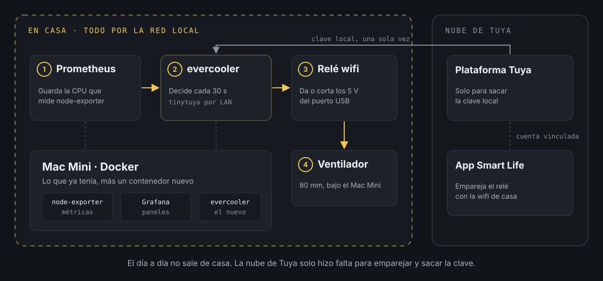
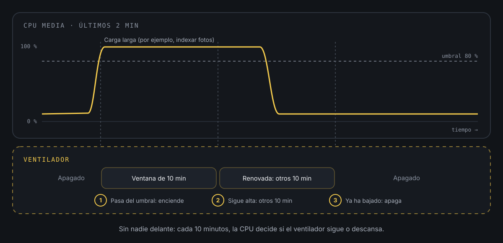

Un ventilador que se enciende solo.
En la primera parte conté cómo rescaté un Mac Mini de 2012 para convertirlo en el servidor de casa y cómo, cuando empezó a calentarse con la galería de fotos, le diseñé una base a medida con un ventilador USB de 80 mm debajo. Esta segunda parte va de lo que faltaba: que el ventilador se encienda solo cuando hace falta.
Encenderlo solo cuando hace falta: proyecto Evercooler
Con el ventilador ya montado bajo el Mac Mini, quedaba decidir cuándo gira. Tenerlo siempre encendido es la solución fácil, pero el servidor pasa casi todo el día tranquilo y solo se calienta en momentos concretos (en mi caso, sobre todo cuando la galería de fotos se pone a indexar). Quería que el ventilador se encendiera solo cuando el Mac Mini empieza a trabajar de verdad y que se apagara cuando termina, sin tener que acordarme de nada.
El dilema
La primera idea fue un enchufe inteligente con su app, pero eso es un interruptor a distancia, no una automatización. Seguiría siendo yo quien decide cuándo encenderlo.
La segunda, montarlo todo en Home Assistant. Funciona, pero no lo tengo en el servidor y montar una plataforma entera para un solo ventilador me parecía matar moscas a cañonazos.
También dudé sobre qué medir. Lo intuitivo es la temperatura, pero tiene trampa: cuando el ventilador enfría el equipo, la temperatura baja, el sistema decide apagarlo con la carga todavía en marcha y vuelta a calentarse. La CPU no depende del ventilador, así que no se engaña a sí misma. Además avisa antes: cuando la CPU sube, el calor todavía no ha llegado.
El término medio
Un relé wifi USB intercalado entre el puerto del Mac Mini y el cable del ventilador, sin pelar ningún cable, y un pequeño contenedor que lo controla. Lo he llamado evercooler. Cada 30 segundos pregunta a Prometheus cómo va la CPU y, si hace falta, enciende el relé directamente por la red de casa.
La clave está en que el relé es de la familia Tuya (los que se manejan con la app Smart Life) y esos dispositivos se pueden controlar en local, sin pasar por su nube, si conoces su clave de cifrado. Conseguir esa clave es la parte pesada, pero solo se hace una vez.
Cómo es el flujo

Prometheus ya estaba midiendo el servidor con node-exporter, y Grafana me lo enseñaba en paneles. Evercooler solo tiene que leer ese dato, decidir y dar la orden al relé. La nube de Tuya aparece a un lado porque solo hizo falta para emparejar el relé y sacar la clave. El día a día no sale de casa.
Sacar la clave del relé
Primero, lo normal: se empareja el relé con la app Smart Life (en una wifi de 2,4 GHz) como cualquier enchufe inteligente. Con eso ya funciona desde el móvil, pero para hablar con él desde un programa hacen falta tres cosas: su identificador, su IP y su clave local. La clave no aparece en la app. Se genera al emparejar y la única forma oficial de leerla es la API de Tuya, que pide una cuenta de desarrollador.
La web de desarrolladores de Tuya (Tuya Developer Platform) es gratuita, pero no es precisamente amable. A mí me salió entera en chino y tuve que buscar el selector de idioma para pasarla a inglés. Estos fueron los pasos:
- Registrarse eligiendo España como país. Si la cuenta queda en el centro de datos chino, luego no ve los dispositivos europeos.
- Ir a Cloud → Development → Create Cloud Project y crear un proyecto de tipo Smart Home, con el centro de datos Central Europe Data Center.
- Aceptar las APIs que propone por defecto.
- Dentro del proyecto, ir a Devices → Link App Account y escanear el QR desde la propia app Smart Life (pestaña Yo, icono de escanear). Así el proyecto ve los dispositivos de la cuenta.
- En Overview apuntar el Access ID y el Access Secret.
Con eso entra en juego tinytuya, una librería de Python que trae un asistente para descargar las claves. Para no instalar nada en el servidor, lo lanzo en un contenedor de usar y tirar:
docker run --rm -it --network host -v "$PWD":/work -w /work \ python:3.12-slim sh -c "pip install -q tinytuya && python -m tinytuya wizard"El asistente pide el Access ID (lo llama API Key), el Access Secret, el identificador de cualquier dispositivo y la región (eu). Después ofrece descargar los nombres de los datos de cada dispositivo y buscarlos en la red local. A todo, que sí. Al final enseña algo así:
Polling local devices... [Ventilador ] 192.168.1.50 - [On] - DPS: {'1': True, '9': 0, '38': 'memory'}Ahí está todo lo necesario: la IP, que el relé responde y su estado. Los números son los "puntos de datos" del dispositivo. El 1 es el interruptor, el 9 una cuenta atrás que no uso y el 38 lo que hace el relé cuando vuelve la corriente. La documentación de Tuya dice que este último vale 0, 1 o 2, pero mi relé usa off, on y memory. Lo dejé en on, por una razón que cuento más abajo.
El asistente guarda los identificadores y las claves en unos ficheros JSON en la carpeta desde la que se lanza. Ojo, que trae las claves de todos los dispositivos de la cuenta, no solo del relé. Esos ficheros se guardan con permisos restrictivos y no se suben a ningún repositorio.
Probar el relé desde un programa
Con la clave en la mano, controlar el relé son cuatro líneas. Un ejemplo con datos inventados:
import tinytuya rele = tinytuya.OutletDevice("ID_DEL_RELE", "192.168.1.50", "CLAVE_LOCAL")rele.set_version(3.5) print(rele.status())rele.turn_off()Debería verse algo así, y el ventilador se para:
{'dps': {'1': True, '9': 0, '38': 'on'}}La versión de protocolo (3.5 en mi caso) también la da el asistente. Si no coincide, el relé no contesta.
De dónde sale la CPU
Evercooler no necesita nada más que lo que ya había: le pregunta a la API de Prometheus por el uso medio de CPU de los últimos dos minutos.
100 - avg(rate(node_cpu_seconds_total{mode="idle"}[2m])) * 100La consulta mide qué parte del tiempo no han estado ociosos los núcleos y la convierte en porcentaje. La media de dos minutos filtra los picos de unos segundos, que no calientan nada.
Para elegir el umbral, antes de escribir una línea de código miré lo que había pasado en las dos semanas anteriores. Salió una carga muy de blanco o negro: la mitad del tiempo, la CPU estaba por debajo del 11 %, y cuando subía, se iba casi al 100 % durante una media hora, unas tres veces al día. Con ese perfil, el umbral exacto importa poco. Me quedé con el 80 %.
Ventanas de diez minutos
Lo que no quería era un ventilador que se encienda y se apague cada 30 segundos siguiendo la CPU. Así que la lógica trabaja por ventanas:
- Si la CPU supera el 80 %, enciende el ventilador y abre una ventana de 10 minutos.
- Durante la ventana no vuelve a decidir: el ventilador gira pase lo que pase.
- Al acabar, mira otra vez. Si la CPU sigue alta, otra ventana de 10 minutos. Si ha bajado, apaga.

En la práctica, el ventilador acompaña toda la carga y luego da un último repaso mientras el equipo se enfría. Nadie tiene que tocar nada.
El corazón del programa, simplificado:
import timeimport requests # rele es el mismo OutletDevice del ejemplo anterior UMBRAL = 80VENTANA = 10 * 60CONSULTA = '100 - avg(rate(node_cpu_seconds_total{mode="idle"}[2m])) * 100' def leer_cpu(): r = requests.get("http://prometheus:9090/api/v1/query", params={"query": CONSULTA}) return float(r.json()["data"]["result"][0]["value"][1]) encendido = Falsefin_ventana = 0 while True: cpu = leer_cpu() ahora = time.time() if not encendido and cpu >= UMBRAL: rele.turn_on() encendido, fin_ventana = True, ahora + VENTANA elif encendido and ahora >= fin_ventana: if cpu >= UMBRAL: fin_ventana = ahora + VENTANA else: rele.turn_off() encendido = False time.sleep(30)La versión real hace algo más: lee el estado del relé en cada vuelta (por si alguien lo ha tocado desde la app) y expone sus propias métricas para que Prometheus también lo vigile a él. Pero la idea es esta.
Cosas a tener en cuenta
Si algo falla, mejor encendido. Un ventilador de 5 V girando de más no hace daño. Un servidor sin ventilación en plena carga, sí. Por eso, si Prometheus deja de responder, evercooler enciende el ventilador. Si paro el contenedor, lo enciende antes de salir. Y el relé está configurado para arrancar encendido cuando vuelve la corriente (el punto de datos 38 en on). Por eso no uso la cuenta atrás que trae el propio relé, porque haría lo contrario: si el programa se cae, el ventilador acabaría apagado.
Los cambios a mano se respetan. Si lo enciendo desde la app, evercooler lo detecta y le aplica sus 10 minutos. Si lo apago con la CPU alta, lo vuelve a encender.
El relé sigue hablando con la nube. Aunque evercooler no la use, el relé mantiene su conexión con los servidores de Tuya, que es por donde le llegan las órdenes de la app. Mirando las consultas DNS en Pi-hole solo aparecen dominios de Tuya, y muy pocas veces, pero hay que saberlo. Si se quiere cortar del todo, se puede bloquear esa salida o cambiar el firmware del relé por uno libre, aunque eso ya son palabras mayores.
Sin internet sigue funcionando. El control va por la red local, así que una caída de la fibra no lo deja sin cerebro. Lo único que no se puede hacer sin conexión es usar la app del móvil.
La cuenta de desarrollador sobra después. En cuanto tuve la clave, desvinculé la app y borré el proyecto de la plataforma de Tuya. La clave sigue valiendo porque vive en el relé, no en el proyecto, y así no queda abierto un acceso por API a todos mis dispositivos. La pega es que, si algún día vuelvo a emparejar el relé, la clave cambia y toca repetir el proceso.
Por qué me convence
Ahora el Mac Mini trabaja tranquilo, el ventilador solo aparece cuando hace falta y yo me he olvidado de que existe, que es el mejor elogio que se le puede hacer a una automatización.
Nada de esto habría sido tan fácil sin tinytuya, así que gracias a quienes la mantienen, por amor al arte, para que los demás podamos controlar estos aparatos en local.
Gracias por acompañarme en las dos partes de este verano de cacharreo. Si te animas a montar algo parecido, cuéntamelo por redes, que me encantará verlo.